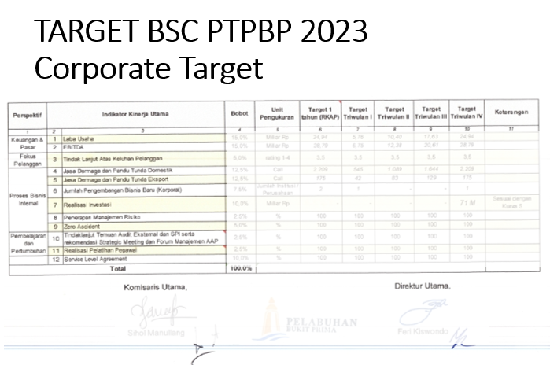
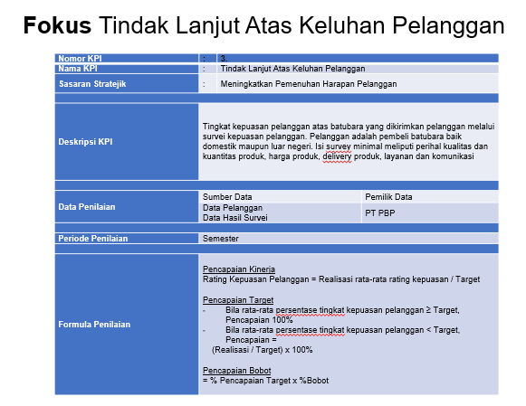

📦 Project Portfolio
Kumpulan proyek strategis, inovasi digital, dan kerangka kerja HR yang telah saya kembangkan.
🌐 NEXTUS-ERP
Deskripsi & Fitur Utama
NEXTUS-ERP adalah sistem perencanaan sumber daya perusahaan yang dirancang untuk mengintegrasikan proses bisnis, HR, keuangan, dan operasional dalam satu platform terpadu. Sistem ini dikembangkan untuk meningkatkan efisiensi, transparansi data, dan kecepatan pengambilan keputusan manajemen.
- Dashboard analitik real-time untuk monitoring KPI
- Modul HRIS terintegrasi (Payroll, Absensi, Performance)
- Automasi alur persetujuan & notifikasi multi-channel
- Arsitektur berbasis cloud dengan skalabilitas tinggi



📊 Penyusunan KPI & OKR Berbasis Strategi
Dalam penyusunan KPI/OKR, saya menggunakan pendekatan Balanced Scorecard (BSC) untuk memastikan setiap indikator kinerja selaras dengan strategi bisnis dan mencakup seluruh aspek organisasi secara seimbang, yaitu perspektif keuangan, pelanggan, proses internal, serta pembelajaran dan pengembangan.
Pendekatan ini memastikan bahwa KPI tidak hanya berfokus pada hasil akhir (financial), tetapi juga mempertimbangkan faktor pendorong kinerja seperti efektivitas proses, kepuasan pelanggan, dan kapabilitas sumber daya manusia. KPI kemudian diturunkan menjadi indikator yang terukur dan relevan, sementara OKR digunakan sebagai alat untuk mendorong pencapaian target secara lebih fokus dan progresif.
Dengan mengintegrasikan BSC, KPI, dan OKR, sistem manajemen kinerja menjadi lebih komprehensif, terarah, serta mampu menghubungkan antara strategi jangka panjang dengan eksekusi operasional secara nyata.
🔍 Pengembangan Framework Internal Audit HR
Dalam melaksanakan Internal Audit HR, saya menggunakan pendekatan terstruktur dan berbasis risiko yang selaras dengan prinsip tata kelola serta standar profesional seperti Institute of Risk Management (framework IRGC). Pendekatan ini memastikan bahwa proses audit tidak hanya berfokus pada kepatuhan (compliance), tetapi juga pada identifikasi risiko, efektivitas kontrol, serta penciptaan nilai dalam fungsi Human Resources.
Saya memiliki pemahaman yang kuat terhadap konsep 17 HR Audit Universe, yang merupakan kerangka komprehensif untuk memetakan seluruh area kritikal HR, termasuk perencanaan tenaga kerja, rekrutmen, onboarding, manajemen kinerja, pelatihan & pengembangan, kompensasi & benefit, hubungan industrial, kepatuhan, serta sistem informasi SDM.
Proses audit dilakukan melalui tahapan yang jelas: perencanaan (risk assessment & ruang lingkup), pelaksanaan (pengujian, wawancara, review dokumen), evaluasi (analisis gap & efektivitas kontrol), serta pelaporan (temuan, tingkat risiko, dan rekomendasi). Setiap dimensi audit didukung oleh indikator terukur dan bukti dokumen untuk memastikan objektivitas.
SOP & Instruksi Kerja
Konten akan segera ditambahkan.
Career Path Development Plan
Konten akan segera ditambahkan.